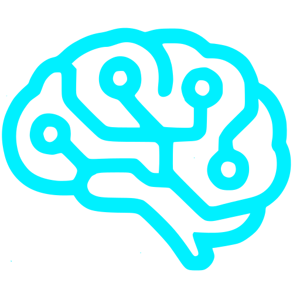

Lucas Oliveira
Investigador Chefe & DeveloperAluno do ISLA-GAIA | licenciando em Engenharia Informática.


Bem-vindo ao futuro do comportamento
Laboratório dedicado à investigação da neuroquímica digital e aos efeitos da tecnologia na mente humana.
Fundado em 2025, o Synapse nasceu da necessidade de compreender o "novo normal". Não condenamos a tecnologia, mas questionamos a autonomia humana diante de algoritmos desenhados para viciar. A nossa equipa multidisciplinar cruza dados, psicologia e design para mapear o impacto do mundo digital no cérebro biológico.
Aluno do ISLA-GAIA | licenciando em Engenharia Informática.